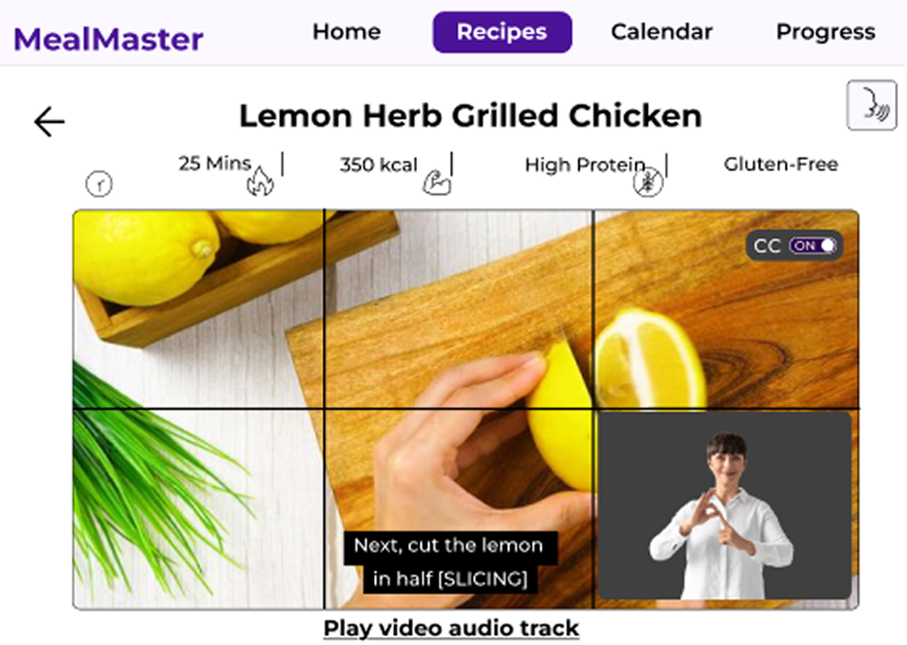

UX / Accessibility Design
Accessible Health & Nutrition App
Overview
This project involved designing an accessible health and nutrition web application for users with physical, cognitive, visual, and auditory impairments. The aim was to create a platform that supports independent cooking, reduces cognitive load, and ensures nutritional information is perceivable and operable for all users.
Personas
I created four personas representing each impairment category: physical, cognitive, visual, and auditory. These personas guided every design decision, ensuring the interface addressed real barriers faced by disabled users.


Accessibility Research
I conducted research into accessible devices and assistive technologies, focusing on how users interact with voice control systems such as Siri, Google Assistant, and built in OS accessibility features. This included analysing natural language patterns, common trigger phrases, and how users phrase cooking related commands.
Key Discoveries Summary ➔
- • Users prefer short, direct commands (Next step, Repeat, How long?).
- • Natural language varies widely, so commands must accept flexible phrasing.
- • Voice systems must confirm actions clearly to avoid confusion.
- • Hands free navigation is essential for users with motor impairments or messy cooking environments.
Design Goals
Cognitive Simplicity
The interface was restructured into a linear, step by step flow to reduce cognitive load. Each task—searching, cooking, tracking nutrition—was broken into digestible, predictable steps.
Inclusive Interaction
Touch targets, spacing, and focus states were designed to support users with motor impairments, while ARIA labels ensured full compatibility with assistive technologies.
WCAG 2.2 Implementation
1.4.6 Contrast Enhanced (AAA)
Critical nutritional data uses a 7:1 contrast ratio to support users with low vision and colour blindness.

1.2.6 Sign Language (AAA)
To support users who rely on sign language, the app includes a dedicated BSL interpreter window for all instructional videos. Following accessibility best practice, the interpreter window occupies at least one sixth of the video area, ensuring the signer remains clearly visible without obstructing essential content. Captions are displayed simultaneously, using a high contrast background and sans serif text to maximise readability.

3.3.1 Error Identification (A)
Errors are described in text, not colour alone, supporting users with cognitive impairments.

2.4.7 Focus Visible (AA)
A high contrast focus ring ensures full keyboard navigation for users who cannot use a mouse.

1.4.8 Visual Presentation (AAA)
The interface follows WCAG 1.4.8 by limiting line length, increasing line spacing, and providing generous spacing between paragraphs. Recipe descriptions do not exceed 80 characters per line, and line height is set to 1.2–1.4em depending on the content type. This improves readability for users with cognitive impairments, dyslexia, and attention related conditions.

Post Testing Update
Usability testing revealed that users often lost track of which ingredients they had already used. To address this, a checklist system was added to the recipe steps, with large tap targets and screen reader friendly states (Checked / Not checked).

Final Screens
A selection of final high fidelity screens showcasing the completed interface. These demonstrate the visual system, accessibility patterns, and overall user experience brought together in the final build.